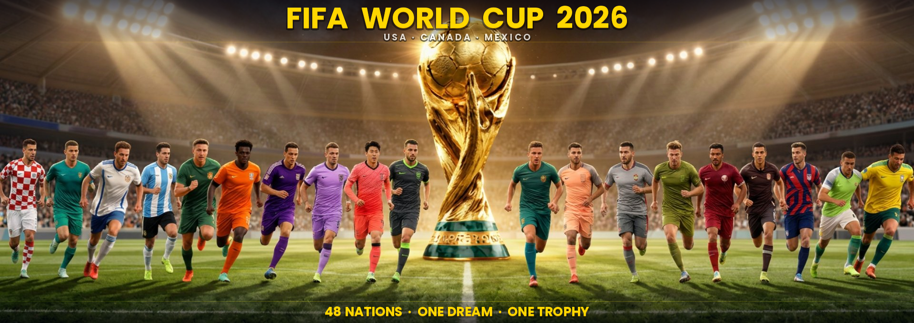

Last updated: 14 June 2026 | Results verified from ESPN / CBS Sports / Yahoo Sports
🏆 Groups & Teams
📊 Results
📚 History
All 12 Groups — 48 Nations
← Back to Groups
Verified Match Results
ⓘ All scores verified from official sources.
Last updated 14 June 2026.
Upcoming fixtures shown with kickoff times (ET).
Football History by Country